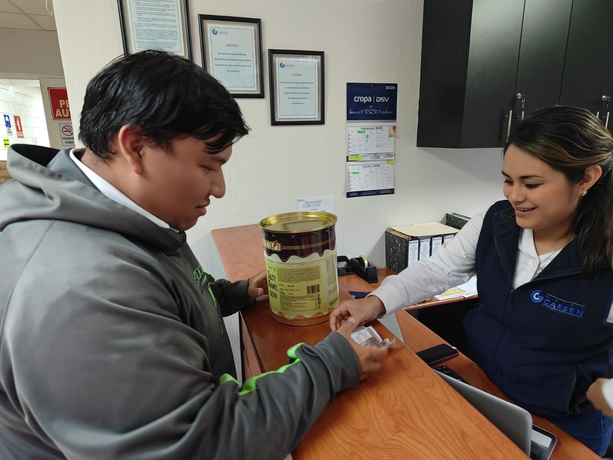

Universidad Mariano Gálvez de Guatemala
Ingeniería en Sistemas de Información · Plan Fin de Semana
Empresa
colaboradora
colaboradora
Proyecto final · Teoría de colas aplicada
Aplicación de Teoría de Colas al área de ventas de Grupo Carsen, S.A. Medimos el proceso de atención, lo modelamos como un sistema M/M/2 y encontramos que el problema no era el que todos suponían.
El sistema
El cliente llega solo al área de ventas, espera en recepción si ambos vendedores están ocupados y pasa con el primero que se desocupa. El vendedor atiende el requerimiento completo: asesoría, cotización y gestión del despacho.
No hay número de turno ni cita en la mayoría de los casos. Se atiende por orden de llegada, con excepciones puntuales por urgencia o atención preferente.
Esas cinco características (llegadas independientes, servicio variable, dos servidores en paralelo, disciplina FIFO y sala de espera sin límite) definen el modelo: M/M/2.

Obtención de datos
Primero entrevistamos al personal del área para entender cómo funciona la atención: en qué orden se atiende, en qué días se llena, cuánto dura una atención típica y qué la interrumpe.
Después registramos una jornada completa. Para cada cliente anotamos tres horas de reloj (llegada, inicio de atención y finalización) y de ahí obtuvimos por diferencia el tiempo de espera y el de servicio. No se registró ningún dato personal de los clientes.
Los tiempos declarados por el personal y los medidos en campo coincidieron: 17.58 contra 17.94 minutos promedio de atención. Una diferencia del 2 %.
Indicadores de desempeño
Con λ = 1.94 clientes por hora y μ = 3.41 clientes por hora por vendedor, la capacidad conjunta del área es de 6.83 clientes por hora. La demanda apenas alcanza la cuarta parte.
| Indicador | Símbolo | Resultado | Qué significa |
|---|---|---|---|
| Tasa de llegada | λ | 1.94 /h | Llega un cliente cada 31 minutos |
| Tasa de servicio | μ | 3.41 /h | Cada vendedor puede atender 3.4 por hora |
| Factor de utilización | ρ | 28.4 % | El sistema está ocupado menos de un tercio del tiempo |
| Sistema desocupado | P₀ | 55.8 % | Más de la mitad del tiempo no hay nadie |
| Clientes en la cola | Lq | 0.05 | Prácticamente nunca hay fila |
| Clientes en el sistema | Ls | 0.62 | Lo normal es un cliente siendo atendido |
| Tiempo en cola | Wq | 1.54 min | Lo que espera antes de pasar |
| Tiempo en el sistema | Ws | 19.12 min | Desde que llega hasta que se retira |
El hallazgo
De los 19 minutos que un cliente pasa en el área de ventas, menos de dos son de espera. Agregar personal reduciría una cola que casi no existe. Lo que sí pesa es cuánto dura cada atención, y eso lo determinan las interrupciones.
Resuelve consultas y ventas directas. Doce de los diecisiete clientes del día.
Atiende requerimientos con explicación técnica y gestión de despacho.
Esa diferencia de más del doble entre un vendedor y otro es la variabilidad que el modelo captura, y la razón por la que un cliente puede esperar aunque el sistema esté casi vacío: si cae justo cuando ambos están ocupados con atenciones largas, espera.
Propuesta de mejora
Las llamadas entrantes interrumpen al vendedor mientras atiende a alguien que ya está enfrente. Lo mismo ocurre con las autorizaciones internas que hay que consultar a media venta.
La propuesta: que recepción reciba las llamadas y las canalice después, y que se definan de antemano las autorizaciones más frecuentes para que el vendedor pueda resolverlas sin consultar.
Con una reducción del 15 % en la duración del servicio, el modelo da esto:
Un tercer vendedor bajaría la espera a 0.15 minutos, pero el tiempo total del cliente apenas pasaría de 19.12 a 17.73 minutos, porque lo domina el servicio. Es un costo fijo permanente a cambio de una mejora que el cliente no percibe.
Sin contratar personal, sin ampliar el área y sin cambiar el horario.
Video pitch
Un resumen en video de la empresa analizada, la metodología, los resultados del modelo y la propuesta de mejora.

Conclusiones